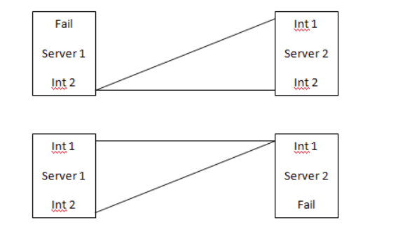

SCTP Multihoming STP Lab
A hands-on telecom networking lab built on VMware vSphere to demonstrate SCTP multihoming, heartbeat monitoring, path failover, and resilient STP communication across isolated networks.
Lab Snapshot



What this project demonstrates
- Understanding of SCTP multihoming behavior
- Lab-based failover and recovery validation
- Hands-on routing and interface planning
- Telecom resilience thinking
- Practical protocol and network testing
Overview
This lab was designed to demonstrate how SCTP multihoming can be used to improve reliability in telecom signalling environments. The goal was to validate how an STP setup behaves when multiple network paths are available and how service continuity is maintained when the primary path fails.
The project focused on creating a controlled environment where heartbeat behavior, routing decisions, and failover events could be tested and understood clearly, without depending on interface bonding or unnecessary complexity.
Lab design
Environment
- Built on VMware vSphere
- Two STP nodes configured with dual network interfaces
- Separate Layer-3 networks used to model primary and secondary SCTP paths
Primary goal
- Validate heartbeat monitoring across multiple SCTP paths
- Observe failover from primary to secondary interface
- Confirm continuity of signalling behavior during path disruption
What I worked on
Network planning
- Planned isolated network paths for multihomed communication
- Defined interface roles for primary and backup path handling
- Reviewed routing behavior to avoid incorrect path assumptions
Configuration and validation
- Configured the lab environment for SCTP path awareness
- Observed heartbeat behavior and active path selection
- Tested failover response under controlled disruption scenarios
Troubleshooting and analysis
- Inspected route behavior and interface states during testing
- Compared expected vs observed failover behavior
- Used lab results to better understand resilience at the transport layer
Technical areas involved
Why this lab matters
This project shows my ability to move beyond theory and validate telecom networking behavior in a practical lab. It reflects a strong interest in resilience, service continuity, and understanding how protocol-level behavior supports real-world infrastructure reliability.
Outcome and learning
The lab improved my understanding of SCTP multihoming, failover mechanics, and route-aware system design. It also strengthened my ability to build small focused technical labs to explore production-relevant behavior in a safe and repeatable way.